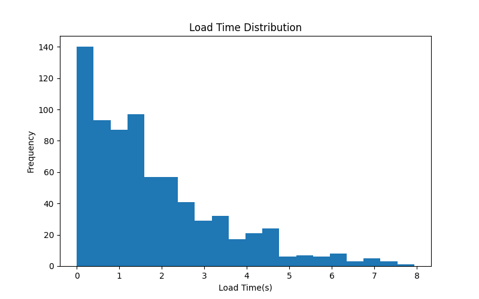
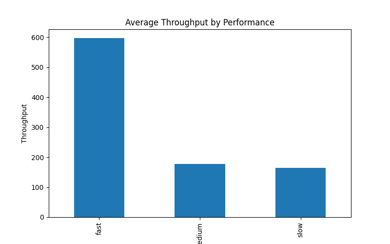
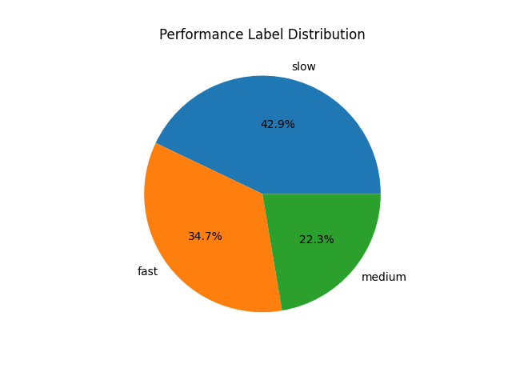

Cloud Infrastructure Optimization using Python & Hypothesis Testing
To analyze website performance metrics using Python libraries like Pandas, Matplotlib, and SciPy. This project identifies patterns in website speed, throughput, response time, and category performance to support real cloud optimization decisions such as auto scaling, monitoring, SLA management, and user experience enhancement.
| Total Rows | Total Columns | File Name | File Type |
|---|---|---|---|
| 734 | 9 | labeled_dataset.csv | CSV |
| Column Names |
|---|
| Sr No |
| website_url |
| Category |
| Page Size (KB) |
| Load Time(s) |
| Response Time(s) |
| Throughput |
| Performance_Label |
| User Response |
✔ Dataset cleaned successfully.
| Metric | Load Time(s) | Response Time(s) | Throughput |
|---|---|---|---|
| Count | 733 | 733 | 733 |
| Mean | 1.786 | 1.013 | 317.69 |
| Median | 1.38 | 0.599 | 97.30 |
| Max | 7.94 | 7.419 | 15227.28 |
✔ Statistical summary generated.



✔ Graphs generated successfully.
Interpretation: Website speed categories differ significantly. This helps cloud teams identify slow services and optimize resources.
Interpretation: Website type (E-commerce, Travel, Media etc.) influences performance behavior.
| Metric | Cloud Use Case |
|---|---|
| Load Time | Auto Scaling Decisions |
| Response Time | Latency Monitoring |
| Throughput | Load Balancer Analysis |
| Performance_Label | SLA Monitoring |
| Category | Capacity Planning |
This project successfully performed end-to-end statistical analysis on a website performance dataset using Python. The dataset was cleaned, visualized, and tested using T-Test, ANOVA, and Chi-Square methods.